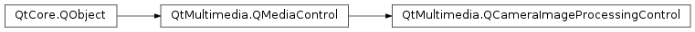

QCameraImageProcessingControl¶
Detailed Description¶
The
PySide2.QtMultimedia.QCameraImageProcessingControlclass provides an abstract class for controlling image processing parameters, like white balance, contrast, saturation, sharpening and denoising.The interface name of
PySide2.QtMultimedia.QCameraImageProcessingControlisorg.qt-project.qt.cameraimageprocessingcontrol/5.0as defined inQCameraImageProcessingControl_iid().Camera service may choose the parameters of image processing pipeline depending on sensor properties camera settings and capture parameters.
This control allows to modify some parameters of image processing pipeline to achieve desired results.
Parameters with the “Adjustment” suffix, like
ContrastAdjustment,SaturationAdjustmentetc allows to adjust the parameter values, selected by camera engine, while parameters like Contrast and Saturation overwrites them.For example setting the
SharpeningAdjustmentparameter to -0.1 slightly reduces the amount of sharpening applied, while settings the Sharpening parameter to 0 disables sharpening at all.
-
class
PySide2.QtMultimedia.QCameraImageProcessingControl([parent=nullptr])¶ Parameters: parent – PySide2.QtCore.QObjectConstructs an image processing control object with
parent.
-
PySide2.QtMultimedia.QCameraImageProcessingControl.ProcessingParameter¶ Constant Description QCameraImageProcessingControl.WhiteBalancePreset The white balance preset. QCameraImageProcessingControl.ColorTemperature Color temperature in K. This value is used when the manual white balance mode is selected. QCameraImageProcessingControl.Contrast Image contrast. QCameraImageProcessingControl.Saturation Image saturation. QCameraImageProcessingControl.Brightness Image brightness. QCameraImageProcessingControl.Sharpening Amount of sharpening applied. QCameraImageProcessingControl.Denoising Amount of denoising applied. QCameraImageProcessingControl.ContrastAdjustment Image contrast adjustment. QCameraImageProcessingControl.SaturationAdjustment Image saturation adjustment. QCameraImageProcessingControl.BrightnessAdjustment Image brightness adjustment. QCameraImageProcessingControl.SharpeningAdjustment Adjustment of sharpening applied. QCameraImageProcessingControl.DenoisingAdjustment Adjustment of denoising applied. QCameraImageProcessingControl.ColorFilter Image filter applied. Since 5.5 QCameraImageProcessingControl.ExtendedParameter The base value for platform specific extended parameters.
-
PySide2.QtMultimedia.QCameraImageProcessingControl.isParameterSupported(arg__1)¶ Parameters: arg__1 – PySide2.QtMultimedia.QCameraImageProcessingControl.ProcessingParameterReturn type: PySide2.QtCore.boolReturns true if the camera supports adjusting image processing
parameter.Usually the supported setting is static, but some parameters may not be available depending on other camera settings, like presets. In such case the currently supported parameters should be returned.
-
PySide2.QtMultimedia.QCameraImageProcessingControl.isParameterValueSupported(parameter, value)¶ Parameters: - parameter –
PySide2.QtMultimedia.QCameraImageProcessingControl.ProcessingParameter - value – object
Return type: PySide2.QtCore.boolReturns true if the camera supports setting the image processing
parametervalue.It’s used only for parameters with a limited set of values, like
WhiteBalancePreset.- parameter –
-
PySide2.QtMultimedia.QCameraImageProcessingControl.parameter(parameter)¶ Parameters: parameter – PySide2.QtMultimedia.QCameraImageProcessingControl.ProcessingParameterReturn type: object Returns the image processing
parametervalue.
-
PySide2.QtMultimedia.QCameraImageProcessingControl.setParameter(parameter, value)¶ Parameters: - parameter –
PySide2.QtMultimedia.QCameraImageProcessingControl.ProcessingParameter - value – object
Sets the image processing
parametervalue. Passing the null or invalidPySide2.QtCore.QVariantvalue allows backend to choose the suitable parameter value.The valid values range depends on the parameter type. For
WhiteBalancePresetthe value should be one ofQCameraImageProcessing.WhiteBalanceModevalues; for Contrast, Saturation, Brightness, Sharpening and Denoising the value should be in [0..1.0] range with invalidPySide2.QtCore.QVariantvalue indicating the default parameter value; forContrastAdjustment,SaturationAdjustment,BrightnessAdjustment,SharpeningAdjustmentandDenoisingAdjustmentthe value should be in [-1.0..1.0] range with default 0.- parameter –
© 2018 The Qt Company Ltd. Documentation contributions included herein are the copyrights of their respective owners. The documentation provided herein is licensed under the terms of the GNU Free Documentation License version 1.3 as published by the Free Software Foundation. Qt and respective logos are trademarks of The Qt Company Ltd. in Finland and/or other countries worldwide. All other trademarks are property of their respective owners.